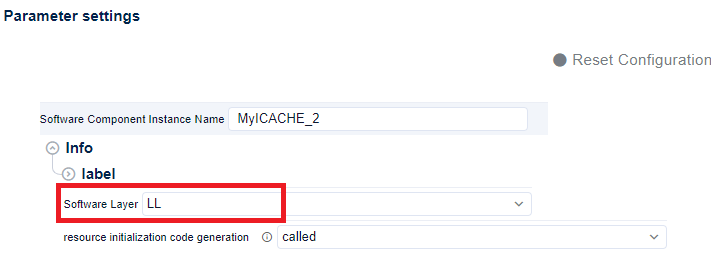
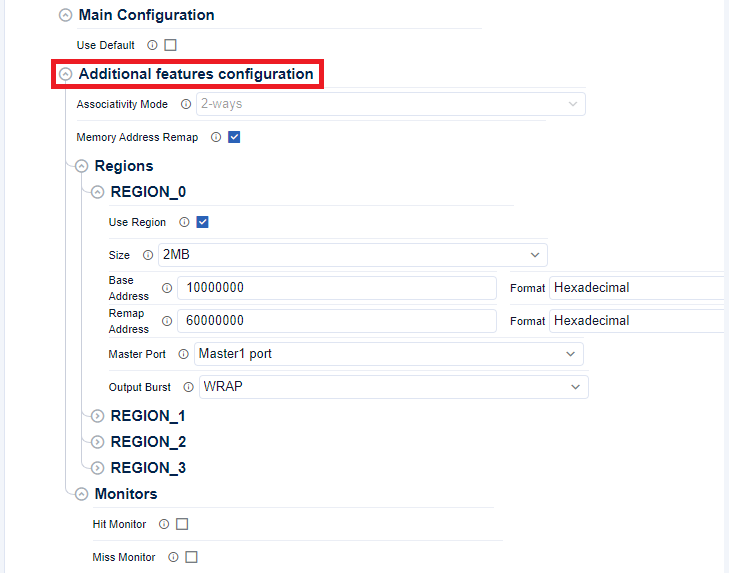
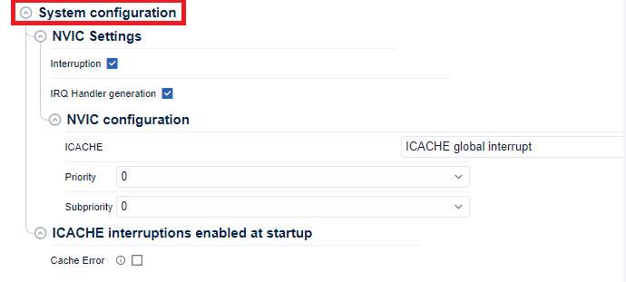

LL ICACHE init and ICACHE deinit for migration ¶
The LL ConfigRegion function previously available in the
stm32tnxx_ll_icache.c
file within HAL1 are no longer present in HAL2.
In HAL2, all LL C file (
stm32tnxx_ll_icache.c
) have been removed, leaving only the LL header files (
stm32tnxx_ll_icache.h
) that contain static inline functions.
If users need to ConfigRegion ICACHE using the LL layer, they have only one method:
-
Utilize STM32CubeMX2 Code Generation : Rely on STM32CubeMX2 to generate code with the LL layer for ICACHE initialization and de-initialization.
-
Replace manually the ConfigRegion function : Replace the
LL_ICACHE_ConfigRegionfunction manually with equivalent sequences using the static inline functions provided in thestm32tnxx_ll_icache.hfile, tailored to their specific configuration and requirements.
This approach ensures that the ConfigRegion sequence is precisely addressing the given use case based on the LL static inline functions provided in the
stm32tnxx_ll_icache.h
header file. The sequences offer improved footprint optimization compared to the previous LL initialization functions found in stm32tnxx_ll_icache.c.
Related concept : Remove stm32tnxx_ll_ppp.c files
Use STM32CubeMX2 Code Generation ¶
This section provides information about the HAL ICACHE initialization and configuration functions migration.
The goal of this page is to show how to migrate the Init sequence using STM32CubeMX2 :
-
Open STM32CubeMX2 ICACHE configuration panel
-
Configure the SW layer LL
-
Configure ICACHE features
-
Generate the code
ICACHE selection ¶
Create a new project with the STM32CubeMX2 , then start the initialisation and configuration.
Enable the ICACHE instance.

ICACHE HAL selection ¶
Select the LL layer.


ICACHE configuration ¶
-
Uncheck the Default configuration and open the
Additional features configurationto access the remap configuration section:


-
Open System configuration to access the interruption features if needed:


Generated ICACHE init and de-init sequences ¶
The ICACHE initialisation and de-initialisation sequences are generated in the
mx_icache_hal_init
function in
mx_icache.c
file under
$PROJ_DIR$/generated/STM32Cube_CodeGen
.
-
User specific configuration:
|
Topic |
HAL1 code snippet |
HAL2 code snippet |
|---|---|---|
|
ICACHE init and config sequences |
static void MX_ICACHE_Init(void)
{
LL_ICACHE_RegionTypeDef pICACHE_RegionStruct = {0};
/* ICACHE interrupt Init */
NVIC_SetPriority(ICACHE_IRQn, NVIC_EncodePriority(NVIC_GetPriorityGrouping(),0, 0));
NVIC_EnableIRQ(ICACHE_IRQn);
/** Configure and enable a region for memory remapping.
*/
pICACHE_RegionStruct.BaseAddress = 0x0;
pICACHE_RegionStruct.RemapAddress = 0x60000000;
pICACHE_RegionStruct.Size = LL_ICACHE_REGIONSIZE_2MB;
pICACHE_RegionStruct.TrafficRoute = LL_ICACHE_MASTER1_PORT;
pICACHE_RegionStruct.OutputBurstType = LL_ICACHE_OUTPUT_BURST_WRAP;
LL_ICACHE_ConfigRegion(LL_ICACHE_REGION_0, &pICACHE_RegionStruct);
/** Enable instruction cache (default 2-ways set associative cache) */
LL_ICACHE_Enable();
}
|
ICACHE_TypeDef *mx_icache_ll_init(void)
{
/* Enable the interruption for ICACHE */
NVIC_SetPriority(ICACHE_IRQn, NVIC_EncodePriority(NVIC_GetPriorityGrouping(), 0, 0));
NVIC_EnableIRQ(ICACHE_IRQn);
/* Associativity mode set to default value 2-ways */
/* LL_ICACHE_SetMode(ICACHE, LL_ICACHE_2WAYS); */
LL_ICACHE_SetConfigRemapRegion(ICACHE, LL_ICACHE_REGION_0,
0x10000000 /* Base Address*/,
0x60000000 /* Remap Address*/,
LL_ICACHE_REGIONSIZE_2MB,
LL_ICACHE_MASTER1_PORT,
LL_ICACHE_OUTPUT_BURST_WRAP);
LL_ICACHE_EnableRegion(ICACHE, LL_ICACHE_REGION_0);
return ICACHE;
}
|
|
ICACHE deinit sequences |
static void MX_ICACHE_Deinit(void)
{
LL_ICACHE_Disable();
}
|
void mx_icache_ll_deinit(void)
{
/* interrupts disabled */
LL_ICACHE_DisableIT(ICACHE, LL_ICACHE_IER_ALL);
/* Clear any pending flags */
LL_ICACHE_ClearFlag(ICACHE, LL_ICACHE_FCR_ALL);
/* Reset monitors */
LL_ICACHE_ResetMonitors(ICACHE, LL_ICACHE_MONITOR_ALL);
/* Disable monitors and ICACHE, 2_ways associative mode is set */
LL_ICACHE_WRITE_REG(ICACHE, CR, LL_ICACHE_2WAYS);
/* Reset and disable remapped regions */
LL_ICACHE_WRITE_REG(ICACHE, CRR0, 0x00000200U);
LL_ICACHE_WRITE_REG(ICACHE, CRR1, 0x00000200U);
LL_ICACHE_WRITE_REG(ICACHE, CRR2, 0x00000200U);
LL_ICACHE_WRITE_REG(ICACHE, CRR3, 0x00000200U);
}
|
Replace manually the ConfigRegion functions ¶
LL_ICACHE_ConfigRegion() API migration ¶
According to the used ICACHE, Implement the precise calls to
LL_ICACHE_SetConfigRemapRegion()
and
LL_ICACHE_EnableRegion
|
HAL1 |
HAL2 |
|---|---|
LL_ICACHE_ConfigRegion();
|
LL_ICACHE_SetConfigRemapRegion();
LL_ICACHE_EnableRegion();
|